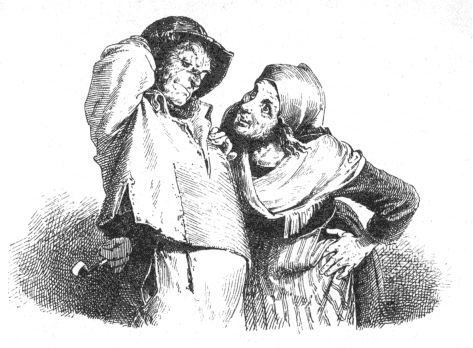

むかしむかし、ひとりの
漁師とそのおかみさんがおりました。ふたりは、海のすぐそばの
小屋に住んでいました。漁師はまい日
魚つりにでかけました。あけてもくれても、魚つりばかりしていました。
あるとき、
漁師はつりざおのそばにすわって、きらきらかがやく水のなかをじっとのぞきこんでいました。漁師は、いつまでもすわったきりでした。
と、とつぜん、つり糸が
水底ふかくぐんぐんしずんでいきました。漁師がさおをあげてみますと、大きなヒラメがかかっていました。すると、そのヒラメが漁師にむかっていいました。
「ねえ、
漁師さん、おねがいだから、わたしを生かしておいてください。わたしは、ほんとうはヒラメではなくって、
魔法をかけられている
王子なんです。あなたがわたしを
殺したところで、なんの
役にたちましょう。食べてもおいしくはありませんよ。どうかもういちどわたしを水のなかにいれて、にがしてください。」
「よしよし。」
と、
漁師はいいました。
「そんなにいろいろいいたてなくてもいい。口のきけるヒラメなら、にがさずにおくもんかい。」
こういって、漁師はきらきらかがやいている水のなかへ、もういちど
魚をはなしてやりました。ヒラメは
水底へもぐっていきましたが、あとへ長い
血のすじをのこしていきました。そこで、漁師は立ちあがって、おかみさんのいる
小屋にかえっていきました。
「おまえさん、きょうはなんにもとれなかったのかい。」
と、おかみさんがたずねました。
「うん、なんにもだ。」
と、
漁師はいいました。
「ヒラメを一ぴきとりはしたがな、そいつが
魔法をかけられた
王子だっていうもんだから、またにがしてやっちまった。」
「で、おまえさん、そいつになんにもたのまなかったの。」
と、おかみさんがたずねました。
「そうよ。」
と、漁師はいいました。
「いったい、なにをたのもうっていうんだい。」
「あきれたねえ。」
と、おかみさんがいいました。
「こんな
小屋にいつまでも住んでるなんて、いやんなっちゃうよ。このなかはくさくって、
胸がむかむかするじゃないの。小さなうちをひとつほしいっていやあよかったのに。もういっぺんいって、そのヒラメをよびだしてさ、わたしたちゃ小さなうちがほしいっていってごらんよ。きっと、くれるから。」
「それにしてもなあ――」
と、
漁師はいいました。
「なんだって、もういっぺんいくんだい。」
「だってさ、おまえさん、そいつをつかまえて、またにがしてやったんだろ。だから、きっと、なんとかしてくれるさ。すぐいっといでよ。」

漁師は、それでもまだ気がすすみませんでしたが、おかみさんに
反対しようとも思いませんので、海へでかけていきました。さっきのところへきてみますと、海はすっかりみどり色と黄色になっていて、もうきらきらひかってはいませんでした。
漁師は海べに立って、こういいました。
小人さん 小人さん きておくれ
ヒラメさん 海のヒラメさん
おれの女房のイルゼビルが
おれの思うようにならんのだ
すると、あのヒラメがおよいできて、いいました。
「なんです、おかみさんはなにがほしいっていうんです。」
「いやなあ。」
と、
漁師はいいました。
「おれはおまえをつったろう。だから、おまえになにかたのめばよかったと、
女房のやつがいうんだよ。あれはもうぼろ
小屋に住むのはいやで、小さなうちが一
軒ほしいんだそうだ。」
「おかえりなさい。おかみさんには、もううちができていますよ。」
と、ヒラメがいいました。
こういわれて、漁師が家にかえってみますと、おかみさんはもう小屋にはいませんでした。そこには小さな家が一
軒たっていて、おかみさんは戸口のベンチにこしかけていました。おかみさんは
漁師の手をとって、いいました。
「まあ、はいってごらん。まえよりはずっといいよ。」
ふたりはなかへはいりました。家には、小さな
玄関と、小さなりっぱな
居間と、ベッドのおいてある小べやがありました。それに、
台所も
食堂もあります。どのへやにもじょうとうの
道具がそろっていて、入り用なものは、
すずや
しんちゅうでまことにみごとにそなえつけができていました。さらに家のうしろには、ニワトリやアヒルのいる小さな
庭もありましたし、いろんな
野菜や、くだものの木のうわっている、ちょっとした畑もありました。
「ごらんよ。」
と、おかみさんがいいました。
「わるくないじゃあないか。」
「まったくだ。」
と、
漁師がいいました。
「ずうっとこのまんまでいてもらいたいもんだ。もう、これでいいとしてくらそうぜ。」
「まあ、よく考えてみようよ。」
と、おかみさんはいいました。
それから、ふたりはなにか食べて、ベッドにはいりました。
こうして、一週間か二週間は、うまいぐあいにすぎました。ところが、そのうちに、おかみさんがこんなことをいいだしました。
「ねえ、おまえさん、このうちはせますぎるよ。それにさ、
庭だって畑だって小さすぎるよ。ヒラメは、もっと大きいうちだってあたしたちにくれられたろうにねえ。あたしゃ大きい石のお
城に住んでみたいよ。ヒラメのところへいって、お城をもらっといでよ。」
「あきれたなあ、おまえ。」
と、
漁師はいいました。
「このうちでたくさんじゃないか。なんだってお城に住みたいなんていうんだ。」
「なにいってんだい。いいから、いっといでよ。ヒラメにゃそのくらいのこと、いつだってできるんだよ。」
と、おかみさんがいいました。
「そいつあ、いけねえよ、おまえ。」
と、漁師はいいました。
「ヒラメはこのうちをおれたちにくれたばっかりじゃないか。いますぐいくなんて、おれはまっぴらごめんだ。そんなことをすりゃ、ヒラメだって気をわるくすらあ。」
「いいから、いってきてよ。」
と、おかみさんがいいました。
「そのくらいのこと、ヒラメならうまくやってのけるよ。よろこんでしてくれるさ。さあさあ、いっといでよ。」
漁師は気がおもくて、いきたくはありませんでした。
「こいつは、どうもよくねえ。」
と、漁師はひとりごとをいいましたが、しかたなくでかけていきました。
海にきてみますと、水の色はすっかりスミレ色とあい色と
灰色になっていて、おまけにどろっとしていて、もうまえのようにみどり色や黄色ではありませんでした。でも、まだおだやかでした。
漁師はそこに立って、いいました。
小人さん 小人さん きておくれ
ヒラメさん 海のヒラメさん
おれの女房のイルゼビルが
おれの思うようにならんのだ
「どうしたんです、おかみさんは、いったいなにがほしいんです。」
と、ヒラメがいいました。
「それがなあ。」
と、
漁師ははんぶんびくびくしながら、いいました。
「大きな石のお
城に住みたいっていうんだよ。」
「おかえりなさい。おかみさんは戸口に立っていますよ。」
と、ヒラメがいいました。
そこで、
漁師はひきかえして、家へかえろうと思いました。ところが、もどってみますと、そこには大きな石のお
城がそびえています。おかみさんは、ちょうど
階段の上に立っていて、いまなかにはいろうとしているところでした。おかみさんは漁師の手をとって、
「なかへおはいりよ。」
と、いいました。
こういわれて、
漁師がおかみさんといっしょになかへはいってみますと、お
城のなかには、
大理石をしきつめた、大きな入り口の
間がありました。そして、そこには
召使いたちがおおぜいいて、大きな
扉をつぎつぎとあけてくれました。
ぐるりの
壁は、みんなぴかぴかひかっていて、美しい壁かけがかかっていました。へやのなかのいすやテーブルは
金でできていて、
天井からは
水晶のシャンデリアがさがっていました。そして、どのへやにもどの小べやにも、すっかりじゅうたんがしきつめてありました。しかもテーブルの上には、ごちそうや、とびきりじょうとうのブドウ
酒が、いまにもテーブルをおしつぶしてしまいそうなくらい、いっぱいのせてありました。
それから、お
城のうしろには大きな
庭があって、そこには
馬小屋も牛小屋もありました。そして、りっぱな
馬車も、いく台かおいてありました。
また、
世にも美しい草花や、おいしいくだものの木のうわっている、大きなすばらしい
花壇もありました。それにまた、たっぷり半マイル
（一ドイツマイルは七・五キロメートル）はある
遊園もあって、そこには大きなシカでも、小さなシカでも、ウサギでも、人のほしいと思うものは、なんでもおりました。
「どう、よかあない。」
と、おかみさんがいいました。
「まったくよ。」
と、
漁師がいいました。
「ずうっとこのまんまでいたいもんだ。おれたちゃこのきれいなお
城に住むんだぞ。これでもう、いいとしようぜ。」
「まあ、よく考えてみようよ。」
と、おかみさんはいいました。
「とにかく、ねるとしようよ。」
こうして、ふたりはベッドにはいりました。
つぎの朝、おかみさんのほうがさきに目をさましました。ちょうど
夜があけたばかりのところでした。おかみさんは、ベッドのなかから、目のまえにひろがっているすばらしい土地をながめました。
漁師はまだ手足をのばして、ねていました。すると、おかみさんはひじで漁師の
横っ
腹をつっついて、いいました。
「おまえさん、おきて、
窓のそとを見てごらんよ。ねえ、あたしたち、ここらじゅうの王さまになれないもんかね。ヒラメのとこへいっといでよ。あたしたちゃ、王さまになりたいんだもの。」
「いやんなっちゃうなあ、おまえ。」
と、
漁師がいいました。
「なんだって王さまになんかなりたいんだ。おれは王さまなんぞ、ごめんこうむる。」
「へえ、そうかい。」
と、おかみさんがいいました。
「おまえさんが王さまになりたくなけりゃ、あたしが王さまになるよ。ヒラメのとこへいってきとくれ。あたしゃ、王さまになりたいんだよ。」
「おどろいたなあ、おまえ。」
と、
漁師はいいました。
「どうしてまた、王さまになんかなりたいんだ。おれは、そんなこというのは、いやだよ。」
「なにがいやなのさ。」
と、おかみさんはいいました。
「ぐずぐずいわずに、さっさといってきとくれよ。あたしゃ、どうしたって王さまになるんだから。」
そこで、
漁師はでていきましたが、おかみさんが王さまになりたいなどというものですから、すっかりよわりきっていました。
（こいつはよくねえ。よくねえこった。）
と、漁師は思いましたので、いきたくはありませんでした。しかし、どうにもしかたなく、でかけていきました。
海べへきてみますと、海はすっかり黒ずんでネズミ色をしていました。水は
底のほうからブツブツわきかえっていて、くさったようないやなにおいが、ぷんぷんしていました。
漁師はそこに立って、いいました。
小人さん 小人さん きておくれ
ヒラメさん 海のヒラメさん
おれの女房のイルゼビルが
おれの思うようにならんのだ
「どうしたんです、おかみさんはなにがほしいっていうんです。」
と、ヒラメがいいました。
「それがなあ。」
と、漁師はいいました。
「王さまになりたいっていうんだよ。」
「おかえりなさい。おかみさんはもうのぞみどおりになっていますよ。」
と、ヒラメがいいました。
そこで、
漁師はかえっていきました。お
城のそばまできてみますと、お城はまえよりもずっと大きくなって、大きな門にはすばらしいかざりがしてあります。
扉のまえには
番兵が立っています。そこらじゅうに、おおぜいの
兵隊がいて、たいこやラッパもたくさんありました。
お
城のなかへはいってみますと、なにもかもがほんものの
大理石に
金をとりあわせたものばかりでした。ビロードのおおいには、大きな金のふさがついていました。
大広間の
扉があきますと、そこには
宮中のお
役人が、ひとりのこらず、いならんでいました。そして
漁師のおかみさんは、金とダイヤモンドでできている高い
玉座にすわり、大きな金のかんむりをかぶって、金と
宝石の
しゃくをもっていました。そして、おかみさんの両がわには、わかい
侍女がそれぞれ六人ずつ一
列にならんで立っていました。そのひとりひとりは、頭の高さだけじゅんじゅんに
背がひくくなっていました。
漁師はおかみさんのまえまで歩いていきますと、立ちどまって、いいました。
「おやおや、おまえは王さまになったのかい。」
「そうだよ、あたしゃ王さまだよ。」
と、おかみさんはこたえました。
漁師はそこにつっ立ったまま、おかみさんをじろじろながめていました。こうして、しばらくながめてから、漁師はいいました。
「なあ、おまえ、おまえが王さまたあ、すばらしいこった。もうこのうえのぞむのはよそうぜ。」
「それがねえ、おまえさん。」
と、おかみさんはちっともおちつかないようすで、いいました。
「あたしゃあ、すっかりあきあきしちまって、もうどうにもがまんができないんだよ。ヒラメのところへいってきとくれ。あたしゃ王さまなんだから、こんどは、どうしても
皇帝になりたいんだよ。」
「じょうだんじゃないよ、おまえ。」
と、
漁師はいいました。
「どうしてまた、皇帝になんかなりたいんだ？」
「おまえさん、ヒラメのとこへいってきとくれよ。あたしゃ、皇帝になりたいんだもの。」
「だがなあ、おまえ。」
と、漁師はいいました。
「ヒラメだって、
皇帝になんかするこたあできない。おれは、ヒラメにそんなこというのはいやだ。皇帝といやあ、国じゅうにひとりっきりしかいないもんだ。いくらヒラメだって皇帝をこしらえるこたあできない。どうしたって、そんなこたあできない。できやしないよ。」
「なんだって。」
と、おかみさんがいいました。
「あたしが王さまで、おまえさんはただの、あたしの
夫なんだよ。すぐいってくれるね。さあ、すぐいってきておくれよ。ヒラメは、王さまだってこしらえたんだもの、
皇帝だってこしらえられるさ。あたしゃ、どんなことをしても皇帝になりたいんだよ。すぐいってきておくれ。」
漁師はどうしてもいかなければなりません。それで、でかけるにはでかけましたが、なんだか
心配で心配でなりませんでした。そして歩きながら、ひとりで考えました。
（こいつぁあ、よくねえ、よくねえことになるぞ。
皇帝たあ、あんまりあつかましすぎらあ。ヒラメだって、しまいにゃいやになっちまうぞ。）
こんなことを考えながら、海べにきてみますと、海はまっ黒で、どろどろしていました。そして、
底のほうからブツブツわきかえりはじめましたので、たちまち、あわだらけになりました。しかもその上を、つむじ風がふきまくるものですから、水はちりぢりにちぢれました。このありさまを見て、漁師はおそろしくなりました。けれども、
浜べに立って、いいました。
小人さん 小人さん きておくれ
ヒラメさん 海のヒラメさん
おれの女房のイルゼビルが
おれの思うようにならんのだ
「どうしたんです、おかみさんはなにがほしいっていうんですか。」
と、ヒラメがいいました。
「それがねえ、ヒラメさん、
皇帝になりたいっていうんだよ。」
と、
漁師はこたえました。
「おかえりなさい。おかみさんはのぞみどおりになっていますよ。」
と、ヒラメがいいました。
そこで、漁師は家にかえりました。もどってみますと、お
城ぜんたいが
大理石づくりになっていて、まっ白な
石こうの
彫像もおいてあれば、
金のかざりもついていました。
扉のまえでは
兵隊たちが
行進して、ラッパをふいたり、大だいこや小だいこをうちならしていました。お城のなかでは、
男爵や
伯爵や
公爵が、
家来としていったりきたりしていました。そしてその人たちが、
純金でできている
扉をあけてくれました。
漁師がなかにはいってみますと、おかみさんは
玉座にすわっていました。その玉座は、ひとかたまりの
金でつくってあって、高さはたっぷり二マイルぐらいもありそうでした。そして、おかみさんは金のかんむりをかぶっていましたが、その高さがまた、三エレ
（二メートル）ほどもあって、ダイヤモンドとルビーがちりばめてありました。それから、かたほうの手には
しゃくをもち、もういっぽうの手には
皇帝のしるしの、
宝珠をもっていました。
そのうえ、おかみさんの両がわには、
近衛兵が二
列にずらっとならんでいました。それがまた、
身のたけ二マイルもある大男から、ひとりずつじゅんじゅんに小さくなって、おしまいはわたしの
小指ぐらいしかない小男までがならんでいるのでした。そのまえには、ちょうどおなじ数だけの
公爵と
伯爵が立っていました。
漁師はそのなかを歩いていって、まんなかに立ちどまって、いいました。
「おまえ、
皇帝になったのかい。」
「そうだよ、あたしは皇帝だよ。」
と、おかみさんはこたえました。
それから、漁師はまた歩いていって、立ちどまりますと、おかみさんをつくづくながめました。しばらくこうしてながめてから、いいました。
「なあ、おまえ、おまえが
皇帝たあ、すばらしいこった。」
「おまえさん、なんだってそんなとこにつっ立ってるんだい。あたしゃ皇帝になったけど、こんどは
法王にもなりたいんだよ。ヒラメのとこへいってきとくれ。」
と、おかみさんがいいました。
「あきれてものもいえねえな。」
と、
漁師はいいました。
「いったい、おまえがなりたくないってものは、ないのかい。
法王になんかなれっこねえよ。法王といやあ、キリスト
教の
世界でたったひとりしかいないんだからな。いくらヒラメだって、法王はこしらえられねえよ。」
「おまえさん、あたしゃ
法王になりたいんだよ。さあ、はやくいってきとくれよ。あたしゃ、なんでもかんでもきょうのうちに法王になりたいんだもの。」
と、おかみさんがいいたてました。
「いやだよ、おまえ。」
と、
漁師はいいました。
「おれは、そんなこというのはごめんだ。そいつはよくねえぜ。あんまりあつかましすぎるもの。ヒラメにだって、おまえを
法王にするなんてこたあ、できやしないよ。」
「おまえさん、なにをばかなこといってんだい。」
と、おかみさんがいいました。
「
皇帝にすることができるんなら、法王にだってできるはずさ。さっさといってきとくれ。あたしゃ皇帝で、おまえさんは、ただのあたしの
夫なんだよ。すぐいってきてくれるかい。」
こういわれますと、
漁師はびくびくして、でていきました。けれども、からだの力がすっかりぬけてしまったようです。からだはがたがたふるえ、
ひざや
ふくらはぎはがくがくしていました。
風が
陸地の上をビュウビュウふきまくっています。雲は
矢のようにはやくとんでいます。日がくれかかって、あたりがくらくなってきました。
木の
葉が、木からバラバラとおちてきました。水は
煮えくりかえるように、とどろきゆれて、バチャバチャと岸べをうっていました。
遠くのほうに、いくそうかの
船が見えました。船は
波の上で、おどったりはねたりしながら、
鉄砲をうって、たすけをもとめていました。
しかし、空のまんなかには、まだわずかながら青いところが見えました。そのまわりは、ひどい
嵐のときのように、まっかでした。
このありさまに
漁師はすっかりおじけづいて、おどおどしながら、
浜べに立って、いいました。
小人さん 小人さん きておくれ
ヒラメさん 海のヒラメさん
おれの女房のイルゼビルが
おれの思うようにならんのだ
「どうしたんです、おかみさんはなにがほしいっていうんですか。」
と、ヒラメがいいました。
「それがねえ。」
と、
漁師はこたえました。
「
法王になりたいっていうんだよ。」
「おかえりなさい。おかみさんはのぞみどおりになっていますよ。」
と、ヒラメがいいました。
そこで、漁師はかえっていきました。もどってみますと、こんどは、りっぱな
宮殿でかこまれた大きな
教会のようなものがたっています。
漁師が人ごみをおしわけていきますと、そのなかは、何千というあかりであかあかとてらされていました。おかみさんは
金の
衣装を
身につけて、まえよりもずっと高い
玉座にすわり、大きな金のかんむりを三つもかぶっていました。
そのまわりには、
坊さんたちがおおぜいいました。それから、両がわには、ろうそくが二
列に立てられていました。そのなかのいちばん大きいのは、
世界でいちばん大きい
塔ぐらいもふとくて大きく、いちばん小さいのは
台所の
豆ろうそくぐらいしかありませんでした。
皇帝や王さまがひとりのこらずそこにいて、おかみさんのまえにひざまずいて、そのくつにせっぷんしていました。
「おまえ――」
と、
漁師はいって、おかみさんをじろじろながめました。
「
法王になったのかい。」
「そうだよ、あたしは法王だよ。」
と、おかみさんはいいました。
それから、漁師はそばへあゆみよって、おかみさんをじいっと見つめました。そのようすは、まるで明るいお日さまを見ているようでした。こうして、しばらく見つめてから、いいました。
「なあ、おまえ、おまえが
法王たあ、すばらしいこった。」
けれども、おかみさんは、まるで木のようにしゃちほこばって、
身動きひとつしません。
そこで、
漁師はいいました。
「おまえ、もうこれでいいとしろよ。おまえは
法王なんだぞ。もうこれいじょうのものにはなれやしねえ。」
「まあ、よく考えてみるよ。」
と、おかみさんはいいました。
こうして、ふたりはベッドにはいりました。けれども、おかみさんはまだ
満足してはいませんでした。おかみさんは
欲の
皮がつっぱって、どうしてもねむることができません。こんどはなんになってやろうかと、そんなことばかり考えていたのです。
漁師のほうは、すぐにぐっすりとねむりこんでしまいました。むりもありません。一日じゅうかけずりまわったんですからね。
ところがおかみさんのほうは、どうにもねむることができず、ひと
晩じゅう、ごろごろねがえりばかりうっていました。そして、こんどなれるのはなんだろうと、いっしょうけんめい考えていましたが、なにひとつ思いつくことができませんでした。
そうしているうちに、とうとう、お日さまがのぼりだしました。おかみさんは東の空が明るくなってくるのを見ますと、ベッドのはしにからだをおこして、そっちのほうをじっとながめていました。こうして、
窓のそとにお日さまがのぼってくるのを見ますと、おかみさんは、
（ふん、あたしにも、お日さまやお月さまをのぼらせることはできないもんかね。）
と、こんなことを考えました。
「おまえさん。」
と、おかみさんはいいながら、
漁師のあばら
骨をひじでつつきました。
「おきて、ヒラメのとこへいってきとくれ。あたしゃ
神さまになりたいんだよ。」
漁師はまだねぼけまなこでいましたが、びっくりぎょうてんして、ベッドからころげおちました。そして、じぶんがききちがえたのではないかと思って、目をこすりこすり、
「ねえ、おまえ、いまなんていったんだい。」
と、たずねました。
「おまえさん。」
と、おかみさんはいいました。
「あたしゃあね、じぶんでお日さまやお月さまをのぼらせることもできないで、お日さまやお月さまがのぼっていくのを、ただぼんやりながめているだけじゃ、どうにも
承知ができないんだよ。じぶんでのぼらせることができないようなら、もう一時間だっておちついちゃいられないよ。」
こういって、おかみさんはおそろしい顔をして
漁師をにらみつけたものですから、漁師はふるえあがってしまいました。
「さあ、さっさといってきとくれ。あたしゃ
神さまになりたいんだよ。」
と、おかみさんがいいました。
「なあ、おまえ。」
と、
漁師はいって、おかみさんのまえにひざまずきました。
「そんなこたあ、ヒラメにゃできやしないよ。
皇帝や
法王にならすることもできるけどさ。おねがいだから、このまま法王でがまんしていてくれよ。」
それをききますと、おかみさんはものすごく
腹をたてました。
髪の
毛はさかだってぼうぼうになり、
胸ははだけました。そうして、漁師をけとばして、さけびました。
「あたしゃあ、もうがまんできない。もうこれっぱかしもがまんできない。おまえさん、いってくれるかい。」
そこで、
漁師はあわててズボンをはいて、気がくるったようにかけだしました。
ところが、おもては、ものすごい
嵐があれくるっていましたので、漁師はほとんど立っていることもできないくらいでした。
家や木ぎはひっくりかえり、山やまはぐらぐらゆれて、岩はごろごろと海のなかにころがりおちました。空はまっ黒で、かみなりがとどろきわたり、いなびかりがぴかぴかひかっていました。海は、
教会の
塔か山ぐらいもあるまっ黒な
大波をもりあげていました。その大波のひとつひとつのてっぺんには、白いかんむりのようにあわがわきたっていました。
漁師は大声をはりあげてどなりましたが、じぶんの声もきこえないくらいでした。
小人さん 小人さん きておくれ
ヒラメさん 海のヒラメさん
おれの女房のイルゼビルが
おれの思うようにならんのだ
「どうしたんです、おかみさんはなにがほしいっていうんですか。」
と、ヒラメがいいました。
「それがねえ、
神さまになりたいっていうんだよ。」
「おかえりなさい。おかみさんは、もとのぼろ
小屋のなかにいますよ。」
と、ヒラメがいいました。
ふたりは、それからずうっと、いまでも、その小屋のなかにすわっていますよ。